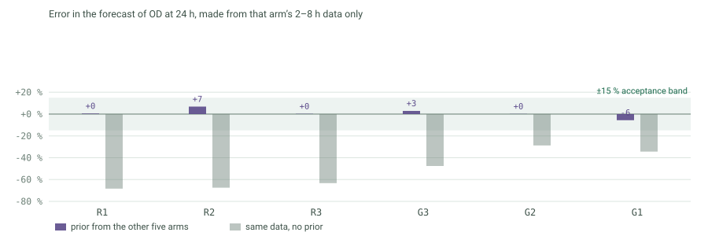

Introduction
Our bioreactor will run for weeks beside farmland, far from a lab. Nobody will be there to take samples or read every value, so the twin has to turn the instrument readings into a recommendation a farmer can act on.
Without manual sampling, the reactor's own instruments are the only record of the batch, and they drift as they wear. On the 434-hour run the OD channel failed, and the twin's trust layer flagged the reference beam 26.7 hours before the OD readings became unusable.
The twin reads three kinds of data. Regional data (the weather forecast, crop-stress risk and the Geospatial Analysis maps) show when and where crops will come under stress. Field sensors beside the crop measure leaf temperature, leaf wetness, and air temperature and humidity, which show what the plants are experiencing at that moment and check the regional forecast against conditions on site (R6). Local data from BR-01 show how much biomass is in the loop, whether it is growing, whether the membrane still passes permeate, and whether those readings can be trusted (R3).
From these it works out when to switch on green light to start protectant production, which protectant, and how much. Induction makes sense when the field is heading into stress and the culture can respond, and the forecast (R4) and growth prior (R5) say whether the batch will be ready in time. Once the ACC deaminase assay puts a number on the product, the same framework can estimate how long to induce to reach a target amount.
What is a digital twin?
A digital model represents a physical system but is updated by hand. A digital shadow receives live data automatically, but changes back to the system still need a person. A digital twin closes the loop: data flows automatically from the system to the model and back. The line between the three is not always clear; what separates them is whether information moves on its own.
What the reactor measures now
Every value is tagged by how it was obtained:
- in-line A sensor on the loop of culture pumped around the bioreactor.
- commanded Set by the operator (the farmer).
- soft Calculated from in-line readings.
- bench tested Measured on a bench, not yet in the field or on the rig.
- planned Not yet collected.
- external Data pulled in from outside the rig.
These tags are the page's own scheme. The rig app's log is plain CSV with a fixed header, which any spreadsheet or pandas script opens, and it follows no published synthetic biology standard such as SBOL. In the log itself only temperature carries its source, in a temp_src column; the columns are listed under What survives which failure.
Within the bioreactor
| Channel | Instrument | Purpose | Provenance |
|---|---|---|---|
| OD600 | Photometer: 600 nm amber LED, 2 mm flow cuvette, sample and reference lux sensors | Biomass | in-line |
| pH | Arduino pH probe | Growth and secretion conditions; alarm | in-line |
| Pressure × 3 | Transducers on lumen in, lumen out and shell | Lumen ΔP, trans-membrane pressure (TMP), fouling | in-line |
| Loop flow | Turbine flow meter | Cross-flow, wall shear, hydraulic model (R1) | in-line |
| Pinch valve | One STS3215 serial servo | Lumen isolation | commanded |
| Luer valves × 4 | Turned by hand; no actuator yet | Routing between reservoir, module and permeate | planned |
| Lumen ΔP, TMP, fouling ratio | Pressure and flow through the hydraulic model | Membrane state; when to clean | soft |
| Green light | Characterised on the light-programmable array (LPA) | Induces the CcaS/CcaR strain to make protectant | planned |
| Loop temperature | DS18B20 probe, or a value typed by the operator; the record says which | pH compensation, viscosity, growth | in-line or commanded, per row |
| Dissolved oxygen, permeate mass | None fitted | See Must have, yet to have | planned |
This is the rig as designed. The firmware reads three of the four pressure transducers on the parts list, one pinch valve, and no Luer valve or light. The software that runs the reactor lists what is wired.
Outside the reactor
These are the channels outside the reactor: what the plants are experiencing, and what the weather is about to do. Today's rig software reads none of them. They belong to the next interface, and the leaf and air sensors have been on a bench but never on a plant (R6).
| Channel | Instrument or source | Purpose | Provenance |
|---|---|---|---|
| Leaf temperature | SN-3001-YM-N01 dummy-leaf sensor, read over Modbus RTU by an ESP32 | Leaf minus air temperature as a water-stress signal | bench tested |
| Leaf wetness | The same sensor, its other register | Biotic stress detection | planned |
| Air temperature and humidity | SHT31 on I²C, in the same air as the leaf sensor | Local heat and vapour pressure deficit; the reference the leaf sensor is scored against; 5-day mean temperature for the blast rule | bench tested |
| Geospatial analysis | Geospatial Analysis maps | Where crops are likely to come under stress | external |
| Weather forecast | Open-Meteo, hourly, five days back and three ahead | Temperature, humidity, rain, wind, evapotranspiration | external |
| Crop stress risk | Computed from the forecast | When protectant is needed | soft |
| Time | Crop calendar | Tracks the farming cycle | planned |
The rice blast rule
Leaf wetness does not stress rice; it matters because blast fungus needs a wet leaf to infect. The interface applies the BLASTAM rule for leaf blast [7], which counts a wet period from hours of leaf wetness and the temperature during them [8], taking past hours from the sensor and future hours from forecast humidity [9]. The sensor is still on a bench, the rule is unscored on Taiwanese fields, and ACC deaminase is untested against blast, so blast risk is shown to the grower and triggers nothing.
Results
Strains on this page
Reactor runs 1 to 4 used B. subtilis 168: wild type in runs 1 to 3, and 168 with the constitutive ACC deaminase secretion construct in run 4. All four had the hollow fibre module fitted. Run 5 is the first with the production strain, WB800, secreting ACC deaminase constitutively. The CcaS/CcaR green-light strain has not been in the reactor yet; it has grown only on the light-programmable array (R5). R5 and the registered forecast use WB800.
Five runs
Every run so far
Runs 1 and 2 were June prototypes sampled by hand against a shake flask; from July the in-line photometer took over. Figure 1 shows the four finished runs.
| Run | Set-up | OD600 | What it gave |
|---|---|---|---|
| 1 · 6 June prototype 260606 | 168. PES hollow fibre, lumen about 200 mL; 300 mL LB plus 20 mL overnight culture; peristaltic pump at 94 mL/min; no stirring | Hand samples to 27 h: reactor 0.17 to 0.37, flask to 2.46 | Stopped by a pump leak. 2 mL of shell-side liquid grew no colonies. Next: BPT tubing, stirring, sampling at the reservoir |
| 2 · 14 June prototype 260614 | 168. Run 1 plus stirring at 200 rpm and a sampler before the pump; 37 °C; 300 mL as in run 1 | Samples every 15–20 min to 7.1 h: reactor 0.90 by 145 min, flask 0.83 by 278 min | Stirred reactor plateaued about two hours before the flask. Next: 22 °C |
| 3 · 21 July to 8 August | Wild-type 168 at 22 °C, 300 mL, hollow fibre module fitted, in-line photometer | 434 h continuous, peak about 1.5 | The trust layer (R3); the 22 °C plateau in Limits |
| 4 · 1 to 6 September | 168 with constitutive ACC deaminase secretion, in the incubator, full-length hollow fibre module; 1 L | Two files: 3.2 h from near zero to 0.24; 10.2 h unlogged; then 102 h from 0.84 to 3.77 | The forecast comparison (R4), on the second file. The 53 hours of 2 to 4 September in the Dry Lab Notebook are the first part of this run |
| 5 · 8 to 9 October | WB800 secreting codon-optimised ACC deaminase (v2t1), constitutive promoter; 1 L; rig app v4.13 | Ran 8 to 9 October; the analysis is not finished | Scores the registered forecast and repeats the permeate activity assay. Neither score is in this version of the page |

260610 test1 no stir.xlsx, 260614, test 2 stir.xlsx, 0721, test3 20 day.csv, 20260902 and 20260906 test4 photometer.csv.What the June pair measured
Both vessels started run 1 at OD 0.172. Unstirred, the flask grew exponentially from 2 to 7 h at r = 0.309 ± 0.023 h⁻¹ (doubling time 134 min, R² 0.95), reaching 1.13 at 7 h and 2.17 at 24 h. The bioreactor moved between 0.083 and 0.194 with a mean of 0.133, and its fitted rate of −0.04 ± 0.03 h⁻¹ cannot be told apart from zero. At 24 h the flask read 2.17 against the bioreactor's 0.197, a factor of 11 between the two vessels.
Stirring was added for run 2 to give the aerobe more oxygen. The flask grew at 0.430 ± 0.012 h⁻¹ (97 min, R² 0.99). After a lag of about an hour the bioreactor grew at r = 1.195 ± 0.058 h⁻¹ (35 min, R² 0.99) to OD 0.895, then held 0.84 ± 0.05 for the remaining four hours.
The growth rate the twin sees therefore depends on how the vessel is run, so a prior has to be labelled with its vessel and its mixing rather than treated as a property of the strain. The 1.195 h⁻¹ measured here is about four times the 0.299 h⁻¹ fitted on the light-programmable array.
Neither spreadsheet logs temperature. Run 2 is noted at 37 °C, which is also the plate's temperature, so the gap to the plate prior is more likely vessel, mixing and strain (168 here, WB800 on the plate) than temperature, and one pair of runs cannot split them. Nor can these data say whether the unstirred bioreactor failed to grow or grew while its cells settled out of the sampled volume, which are different faults with the same reading.
The June pair is why the reactor has a stirrer: unstirred, the reactor barely grew while the flask grew fourteen-fold from its own starting OD; stirred, the reactor overtook the flask. Run 1 also gave the first containment check, with no colonies from the shell side of the membrane.
R1 calibrated
Module pressure drop
16 August 2026: water at 22 °C, eight pump settings from 10 to 24% in steps of 2, each measured once, once with the module fitted and once with a jumper in its place. Both fit \(\Delta P = aQ + bQ^2\) through the origin (module R² 0.9954, residual SD 10.1 mbar; jumper R² 0.9950, SD 5.7 mbar). At 263 mL/min the net module drop is 0.096 bar, 1.03 times the Hagen–Poiseuille prediction for 11 open fibres, which justifies using the model as a soft sensor for flow. No point was held out.

260816 pressure to flow rate.xlsx.263 mL/min was chosen as the operating point: wall shear 4064 s⁻¹, mid-way in the module's 2000–6000 band; Re 531, laminar; about 11 effective fibres of a nominal 11, so none are blocked. Axial non-uniformity is 28% against a 20% target, but lowering the flow would also lower shear.
The 25 August progress report gives 0.084 bar and 0.90–0.96× theory for the same spreadsheet. The figures here are the later analysis and replace it.
Wall shear can be computed from the pressure drop or from the flow rate. At the 263 mL/min operating point the two agree to 2.8%. Away from it the fitted drop leaves theory: 0.83× at the lowest flow measured, 113 mL/min, and 1.27× at the highest, 450. The 8 October batch ran at 386.9 mL/min, where the August fit already sits 1.19× theory, so its 20% disagreement is a flag to check and not yet a fault.
R2 calibrated
Photometer and BioDrop calibration against TiO₂ doses
On 23 August 2026, cumulative TiO₂ additions gave 45 paired points between the in-line photometer and the BioDrop spectrophotometer (Figure 3). The doses ran from 2 to 60 mg into 500 mL. The photometer logged 59 points and the BioDrop 45, the last at 46 mg. Scoring both against the known dose, not against each other, showed that both degrade above 30 mg in different ways. Over the 16 points above 30 mg the BioDrop keeps its slope but scatters (R² 0.85, SD 0.12), while the photometer stays precise (R² 0.99, SD 0.022) and its response per milligram falls.

Inline photometer to biodrop.xlsx.A Gaussian process was fitted as a check. Inside its range the linear fit wins (RMSE 0.0235 against 0.0254) and is kept. Past OD 1.2, linear error rises to 0.1715 while the GP holds 0.067, and the GP found its own limit at OD 1.55. Its 95% band covered only 88.9% of held-out points, so its intervals are too narrow. Up to OD 1.2 the photometer regresses on the BioDrop with slope 1.018, R² 0.995, residual SD 0.024 OD. TiO₂ shows linearity, not cell number. Converting the in-line reading to biomass needs the dilution series listed in Must have, yet to have, so every OD on this page is an optical reading and not a cell count.
The R² of 0.85 and 0.99 above are the window above 30 mg alone. Measurement quotes the whole series, where both instruments fit the mass standard above R² 0.999, and calls the photometer calibration-free because it needs no fit against the BioDrop. The two pages describe one dataset over two ranges.
The silica repeat, 10 October
On 10 October 2026 the same loop ran the calibration iGEM's protocol actually asks for: silica in 2.5 mg steps from 2.5 to 100 mg in 500 mL of 1% SDS, read at every step on the BioDrop and on both photometer builds, and logged in-line every five seconds for 4 h 27 min. Against the reference the current build is one to one to OD 2.5 (slope 0.995, intercept −0.07) and reads about 0.33 low above it, where the BioDrop's own values are reconstructed from dilutions. The instrument comparison is on the photometer page; three findings belong here, because the twin reads this log rather than the spreadsheet.
The reference channel has a warm-up. It rose from 289 to 324 lux over the first two hours and then held flat, a 12% change with no fault behind it. These lux values are on the 9:1 splitter build; run 3's reference sat near 26.67 lux (R3) on the earlier optical path, so the two scales are not comparable. That channel is exactly what R3's sensor axis scores, so a run started from cold would raise a sensor alarm on its own warm-up. A twin reading this instrument has to wait the warm-up out or model it, and until it does, the first two hours of any batch are not scoreable.
The run carries its own check. At 137.6 min the suspension was diluted and then restored, which tests proportionality without the dose being known: 2.3610 before (SD 0.0033, 29 readings), 0.7943 after (SD 0.0017, 38), and 2.3665 restored (SD 0.0157, 16). The ratio across the dilution is 2.97 one way and 2.98 the other, and the restored reading returns within 0.2% of the original. A reading of 2.36 therefore carries the same proportional meaning as one of 0.79, which is the property a calibration needs for the twin to compare one reading against another.
The optical path matters more than the particle. The OD 1.2 bend above was measured on the path runs 3 and 4 used. This run used the dual-beam splitter at 9:1 with a path-length factor of 5.0, so a 2 mm cell is reported on a 1 cm scale, and its agreement holds well past OD 1.2. The limit belongs to a configuration, not to the instrument, and has to be re-established whenever the path changes rather than carried over. One bubble flag or more appeared in 40% of readings, which is what the eight robust estimators are there to absorb; between OD 3.0 and 3.2 they agree within 0.002 OD, so the choice of estimator makes little difference to the reported value.
R3 scored on unseen data
The trust layer on a 434-hour growth log
21 July to 8 August 2026: 434 hours of wild-type B. subtilis 168 at 22 °C with the hollow fibre module fitted, 2,671 valid rows of 2,720 logged, no sample drawn. Two axes are scored separately: a sensor axis on the reference beam, which never passes through the culture, and a process axis on the specific growth rate.
Each axis is scored every 10 minutes. A check is an alarm when its score exceeds the 99.5th percentile of the healthy first 120 hours; the table gives the share of alarms in each window.
| Window | What happened | Sensor axis | Process axis | Interpretation |
|---|---|---|---|---|
| 120–160 h | OD falls 0.93 to 0.72; reference normal | 0% | 73% | Process event |
| 220–240 h | Reference steps 26.67 to 25.83 lux; OD still clean | 100% | 0% | Photometer drifting while OD still looks fine |
| 240–434 h | Reference collapses; OD scatter 5 to 10× higher | 100% | 35–36% | Photometer and OD both unreliable |

out/sentinel.json.The trust layer flagged the sensor at 216.3 h, 26.7 h before the OD channel failed completely at 243.0 h: enough time for a controller to drop the faulty feed. The alarm was computed afterwards, from the log. During the run nobody was watching the trace daily and the fault was noticed late. Its cause was the recirculation pump: it failed, and swapping it knocked the optical axis (Engineering). A standard step detector (any jump above 0.05 OD) flagged 23% of sensor anomalies and 0.8% of biological shifts, and could not tell them apart.
The 120–160 h drop
The 120–160 h drop is real: 0.21 OD against a local residual SD of 0.022, with the optical channel normal. Contamination found no support. Four-quadrant streaks gave 168 colony morphology, which argues against a gross bacterial contaminant; the culture also still smelled of B. subtilis, which is weaker evidence and is reported as such. Autolysis with cryptic growth, sporulation and regermination, and biofilm sloughing remain, and one run cannot separate them. The repeat is WB800 with constitutive ACCD under antibiotic selection.
The forecast (R4), the prior (R5) and induction all work from the OD reading, and a drifting sensor can produce numbers that look like normal growth. R3 sits upstream: the sensor axis says whether the instrument can be trusted, the process axis whether the culture changed. On the 434-hour run, with one instrument event, this gave 26.7 hours to mark OD unreliable and pause forecasts while the readings still looked normal. It has been shown on one run with one event of each kind; a detection rate needs deliberate faults on unseen batches.
R4 rules fixed in advance
Batch forecasting
We ran 102 hours of perfusion, 2 to 6 September 2026, with B. subtilis 168 secreting ACC deaminase constitutively; OD600 rose from 0.84 to 3.77. This is the second of run 4’s two files (Every run so far): the culture started on 1 September, was logged for 3.2 h to OD 0.24, then went unrecorded for 10.2 h, so most of the exponential phase is in the gap, and most of what was logged sits above the photometer's OD 1.2 linear limit on this path, so the forecasts below are of the photometer reading and not of biomass. We compared Kalman filter, local linear, global linear and exponential forecasts against persistence, which predicts no change. A forecast was made every hour from 12 h, each using only data up to that point.
| Horizon | Persistence RMSE | Kalman RMSE | Improvement |
|---|---|---|---|
| 2 h | 0.067 | 0.040 | 41% |
| 4 h | 0.132 | 0.083 | 38% |
| 8 h | 0.256 | 0.192 | 25% |
| 12 h | 0.373 | 0.310 | 17% |
A two-state Kalman filter (level and slope) beats persistence at every horizon, by less as the horizon grows.
Most of the run is above the linear limit. The 12-hour median OD rose from 1.06 to 3.75, so R4 forecasts the photometer reading, not biomass. The model comparison still holds, because every model forecasts the same signal.

walkforward_0902_results.csv.Why the other forecasts fall behind
Global linear weighs early data as much as recent data, so it points the wrong way when growth changes speed. Exponential assumes growth keeps accelerating, which it does not over 102 hours of perfusion, so it overshoots. Local linear follows the recent level and slope; the Kalman filter also weighs each reading against the noise, so it follows real changes without chasing scatter.
The Kalman filter updates with each reading without refitting and tracks its own uncertainty, shown as a band on the Growth twin tab. It sits downstream of R3 because it is only as good as its input.
R5 held-out arms
Carrying a growth prior from plate to reactor
A reactor run takes days; a plate run takes 24 hours and tests six conditions, so a prior fitted on a plate would let the twin forecast from the first few hours, when R4's Kalman filter has least to work with. On 19 September 2026, B. subtilis WB800 grew in light-programmable array wells at 37 °C under six light arms (red and green, each at a weak, a medium and a high level in the same intensity ratio), read on a plate reader at five time points to 24 h. A logistic model beat logistic-with-lag by AICc, a score that penalises the extra parameter, and fits at NRMSE 1.9% (normalised root-mean-square error; R² 0.997), against the 15% criterion for bioprocess models [3]: \(r = 0.299 \pm 0.017\;\mathrm{h^{-1}}\) (doubling time 139 min), \(K = 1.005\), \(X_0 = 0.0235\).
Across these six light arms, green induction costs no growth: r spans 0.279 to 0.317 h⁻¹, within one standard error, and the weakest-green arm reaches the highest plateau. The arms are biologically near-identical, so this is a reproducibility result and not a test of a new condition. To test the fit as a prior, we left out each arm in turn, fitted the other five, and predicted its 24 h OD from its first 8 hours, with and without the prior.
| Arm | Observed OD at 24 h | With the prior | Without the prior |
|---|---|---|---|
| R1 weak red | 0.967 | 0.972 | 0.306 |
| R2 medium red | 0.910 | 0.973 | 0.296 |
| R3 high red | 0.967 | 0.969 | 0.355 |
| G1 weak green | 1.014 | 0.958 | 0.666 |
| G2 medium green | 0.975 | 0.977 | 0.695 |
| G3 high green | 0.958 | 0.986 | 0.502 |
With the prior the error was at most 7%; without it, 29 to 68%, from the same eight hours. The plate works as a scale-down model of the reactor, as in biomanufacturing process transfer [3].

lpa_growth_fit_20260919.json.
What this test cannot show
The six arms are biologically near-identical, so this tests reproducibility, not prediction under a new condition, and with no sample between 8 and 24 h, K rests on one time point.
Only r carries over for now: K and X0 need the plate-reader and in-line OD scales cross-calibrated, so the registered forecast predicts r alone.
R6 bench, one day
The leaf and air sensors on the bench
This test uses the same idea as the trust layer in R3: give an instrument a companion that cannot see what it measures. There, the reference beam checks the photometer because it never passes through the culture. Here, the SHT31 checks the leaf thermistor because both sensors sit in the same air. On 10 October 2026 the field sensor rig was tested at three sites with stable air temperature: an incubator at 22 °C, a room at 26 °C and a stairwell at 26.4 °C. The rig is an ESP32 reading two sensors: an SHT31 for air temperature and humidity, and an SN-3001-YM-N01 for leaf temperature and leaf wetness over RS485. Both sensors were held in air beside each other, with no leaf. The SN-3001-YM-N01 reads the temperature and the surface wetness of its own white plastic disc, which stands in for a leaf, so in this test it was reading air and not a plant. Each site had three five-minute runs logged every five seconds, giving 540 paired readings.


The SHT31 matched the nominal temperature of each site. Sharing the same air, the two sensors should agree, yet the leaf sensor read 1.2 to 1.9 °C warmer once settled, and the size of that gap changed from site to site, so one fixed offset will not correct it.
| Site | Air temperature | Air humidity | Leaf − air, site mean | By run |
|---|---|---|---|---|
| Incubator, 22 °C | 21.81 to 22.64 °C | 34.7 to 36.2% | +1.71 ± 0.20 °C | +1.76, +1.50, +1.86 |
| Stairwell, 26.4 °C | 26.20 to 26.81 °C | 55.8 to 61.9% | +1.31 ± 0.19 °C | +1.52, +1.22, +1.20 |
| Room, 26 °C | 25.52 to 26.20 °C | 58.9 to 62.0% | +0.47 ± 0.46 °C | −0.09, +0.54, +0.97 |

1010Temp_incubator_22C_runs1-3.csv and its two companions; numbers in software/figures/numbers.json.The leaf channel was also still moving. It drifted within single runs by as much as 0.13 °C a minute, and at the room site it climbed monotonically across all three: the gap opened from −0.42 °C in the first readings of run 1 to +1.11 °C in the last readings of run 3, against run means of −0.09, +0.54 and +0.97, which is the leaf reading rising 2.2 °C while the air rose 0.68. Five minutes is not long enough for it to settle, so this test cannot tell a site-dependent offset from a sensor still warming from cold. Deciding between them needs a logged start time and a longer run.
What else the 540 readings show
The leaf channel is coarse as well as warm. Leaf temperature arrives in 0.1 °C steps against 0.01 °C from the SHT31, and over three runs it took four distinct values in the incubator and six in the stairwell. It does not follow the air channel's small excursions either: at the stairwell, where the air moved 0.6 °C over the three runs, the two channels correlate at −0.32. Most of the structure in the difference column therefore comes from the reference, not from the leaf.
The leaf_minus_air_C column in the logs is exactly leaf temperature minus air temperature at every one of the 540 rows, so it is a derived value and not a third measurement. Humidity is logged for the same reason the air probe is there: the twin needs vapour pressure deficit at the field, and the three sites spanned 35 to 62% relative humidity without the wetness channel moving at all.
Leaf wetness read 0.0% in every sample. The sensor was never wetted, so this test cannot yet show whether the channel responds. It cannot distinguish a dry sensor reading correctly from a channel that is not reading at all, and the only thing it rules out is that damp air by itself registers as wet. A water-dose series, a dry-down to find the threshold, and a cold-plate dew test are what would settle it, and all three are written up as the tests to run next in the bench rig's own repository, igem2026-leaf-sensor-bench, alongside the ESP32 sketch and the three logs behind Figure 10.
In the field the leaf sensor will be on a plant and the two readings are expected to differ: the leaf minus air temperature difference is one of the signals of water stress. A bias of 1.2 to 1.9 °C is large enough to hide that signal or invent one, so it has to be measured and removed before the twin acts on it. Before the sensor goes on a plant, the rig needs a wet test of the wetness channel and a longer run to find how long the leaf sensor takes to settle.
Registered forecast
To test the twin's forecast, we registered it before a reactor run of B. subtilis WB800 with constitutive ACC deaminase secretion. The strain carries a codon-optimised ACC deaminase, and the run is the 8 October batch. The forecast file is prereg_forecast_20261002.json, SHA-256 bceda7c0…6e0388fc, and cannot be edited after the run. The batch ran 8 to 9 October and its analysis is not finished. The score is not in this version of the page, and it goes here whichever way it falls.
| Registered prediction | Value | Criterion for passing |
|---|---|---|
| Specific growth rate r | 0.2986 h⁻¹, 90% interval 0.2705 to 0.3300 (doubling time 139 min, 126 to 154) | The fitted r falls inside the interval |
| Growth curve shape | Logistic, prior-predicted trace | NRMSE below 15% [3] |
| Time to reach OD 0.5 | Depends on measured inoculum: 7.3 h from OD 0.10, 9.8 h from 0.05, 13.0 h from 0.02 | Observed time inside the 5–95% band |
Why only the growth rate is scored
\(K\) and \(X_0\) were fitted on the plate-reader scale in a 150 µL well; the reactor reads a 2 mm flow cuvette, with no cross-calibration yet, so they are left out of the primary endpoint. The LPA plate was incubated at 37 °C (Measurement), and the registered file assumes a reactor at the same temperature, medium and aeration as the plate. The 8 October batch carries a typed 37 °C because the loop probe was not answering, so as far as the record goes the temperature matches and the primary criterion applies to it.
If the rate fails and the shape passes, aeration and mixing are the first suspects: in June the stirred reactor grew about four times faster than the plate rate at the same nominal temperature (Every run so far). If both fail, the prior does not transfer from plate to reactor, and we will report that.
The activity assay on the same batch
The same batch carries an ACC deaminase activity assay on cell-free permeate, read by the DNPH method as α-ketobutyrate, with its bar set in advance: at least 1 mU/mL (60 nmol α-ketobutyrate per mL per hour), n = 3, and at least three times both an empty-vector permeate and a minus-ACC blank. It is not the first. A permeate assay on 7 October gave 7.2514 mU/mL from a single measurement, above the limit of detection and below the limit of quantitation (Math Model), so this batch is the first with replicates and controls. Measuring the permeate tests expression and delivery across the membrane in one number. The assay is on Measurement.
The software that runs the reactor
Firmware v3.10.9 · backend v4.12 · interface v4.13
The rig app
Every feature in the rig app is there because a run failed without it: the interlocks, the board-side recording, the bubble rejection and the calibration bookkeeping. Every reactor number on this page was recorded by that one program, the Arduino App Lab application our instructor Chars Hsieh wrote for the Uno Q board on BR-01. The plate prior (R5), the bench sensor test (R6) and the BioDrop column in R2 were measured on other instruments.
It has three parts. Firmware v3.10.9 (sketch/sketch.ino) runs on the Uno Q's microcontroller, reads the instruments and holds every interlock. Backend v4.12 (python/main.py) runs on the board's Linux side: it turns readings into derived values and alarms, writes the log to the board's disk and serves the page on port 7000. Interface v4.13 (assets/index.html) is one file in the browser, which displays and commands and protects nothing. The firmware pushes its readings to the backend, and the backend calls the firmware for pump, valve and calibration commands, both over the board's Bridge link. This version recorded the 8 October batch and is the thirteenth release in five weeks.
For the operator it is one file and no install, served by the board on port 7000 in English or Traditional Chinese, with an explanation and normal range behind every information mark.
To run it yourself, import the app archive (bioreactor_app_v4.13_be4.12_fw3.10.9.zip) into Arduino App Lab on an Uno Q and press run. The sketch needs one library, SCServo 1.0.2, which sketch.yaml adds; the Python side needs nothing beyond App Lab's web_ui brick. Then open http://<board address>:7000. With no board, open the interface file in a browser and it loads with blank readings. The archive is not public yet; it goes into the team repository before the freeze.
The 8 October batch

This is the run the registered forecast was written against. In-line: OD600 0.1758 AU, up from near zero over 89 minutes; pH 6.500, drifting down; three pressures; loop flow 386.9 mL/min at PWM 145. Derived: wall shear 4996 s⁻¹, and two clogging indicators, the ΔP ratio at 0.83 and the γ ratio at 1.01. Both divide today's reading by a clean-module baseline that has not been re-measured on this plumbing, so both are marked provisional. The amber banner (calibration restored from file) stays until someone recalibrates; the red strip says TMP_out is negative, so permeate is pushing back on the membrane.
- Flux and permeability are typed in. Nothing weighs the permeate, so the 72 LMH shown is a hand-entered 24.00 mL/min over the membrane area (36 times the 2 LMH design flux in the app's constants), and the 92% permeability trend follows that number.
- Temperature was typed at 37 °C while the constants assume 22. Viscosity enters wall shear directly, so the shear figures and any flux comparison between runs carry the typed value.
The twin also disagrees with itself. With \(b=0\) the ΔP ratio and γ ratio are the same quantity up to a constant of 1.009, yet they read 0.83 and 1.01. The cause is flow: the ΔP baseline of 10.08 kPa implies 385 mL/min, while \(\gamma_{\text{flow}}=4939\,\mathrm{s^{-1}}\) implies 320, a ratio of 1.205 against the 1.206 needed. The two halves of the clogging indicator use different flow windows. They agreed to 2.8% at 263 mL/min in August (R1), and this batch ran at 386.9, above the 300 mL/min ceiling the Dry Lab Notebook set from that fit, so 20% is a flag and not yet a fault. The cleaning decision uses the γ ratio, so the recording will be checked for which window each used.
What survives which failure
All interlocks run in the Uno Q's microcontroller firmware, so no fault in a model, backend or browser can push the loop past a limit. Lumen-in or trans-membrane pressure above 0.5 bar for two consecutive 200 ms windows opens the pinch valve and latches a fault, as do fifteen minutes closed, a servo at 60 °C, or a servo that stops answering. A latched fault stays until an operator clears it.
Each sampling window is written and fsynced to the board's disk as it closes, so a jammed command channel loses control but not data, and closing the browser loses neither. After a restart the app appends to the same file and records the gap in a gap_s column. Missing readings are left blank, never zero, and each row carries the algorithm, configuration and constants that produced it, so a September run can be pooled with an October one.
The log is plain CSV with a fixed header of 73 columns, one row per sampling window (30 s by default), and the unit is in each column's name. The window: window_index, elapsed_s, timestamp_start, timestamp_end, gap_s. The photometer: od600_au, od600_lux_sample, od600_lux_ref, od600_bubble_pct, od600_valid. Flow and pressure: flow_mlmin, pressure_feed_bar, pressure_retentate_bar, pressure_permeate_bar, pressure_tmp_bar. Conditions: pump_pwm, ph, ph_temp_c, temp_src, valve_state. Derived: dp_ratio, gamma_pressure_s1, gamma_flow_s1, gamma_ratio, j_lmh. Trace: alg_profile, config_version, constants_version. The rest are within-window spreads and trends. Run 3 predates this header; its log has nine columns, from timestamp_utc and od600 to lux_ref and bubble_reject_pct.
How each reading is made
Each reading is a measurement procedure in firmware:
| Instrument | How the reading is made |
|---|---|
| OD600 | An amber LED and two lux sensors, one through the 2 mm flow cuvette and one on the lamp. Four dark readings, LED on for 60 ms, then sixteen lit readings, of which the first two are dropped while the lamp settles and fourteen are scored; bubbles rejected by median absolute deviation, and the burst retried if over half is rejected. \(\mathrm{OD}_{600}=\log_{10}(R_{\text{blank}}/R)\times f\) on the sample-to-reference ratio. The reference sensor never sees the culture, which makes the trust layer possible. |
| Pressure | Three transducers, 14-bit, sixteen-fold oversampled at 100 Hz; peak, trough, mean and pulsation frequency of a one-second window every 200 ms. The trough matters: a peristaltic pump makes pressure a waveform, and the membrane can be driven backwards at a trough while the mean looks safe. |
| Loop flow | A turbine meter on an interrupt pin, 2580 pulses per litre; pulses closer than 500 µs are treated as bounce. |
| pH and temperature | pH every 500 ms, 256-fold oversampled on a temperature-compensated Nernst slope; a jump is accepted after three repeats; values outside pH 2–12 are left blank. Temperature comes from the loop probe when it answers and a typed value when it does not, and the record says which. |
What it computes
From three pressures and one flow the app reports the state of the module: TMP_out as \(P_{\text{out}}-P_s\), the lumen drop minus the water column, and wall shear computed twice, from pressure as \(\tau_w/\mu\) and from flow as \(8v/d\). Their ratio is the clogging indicator. The module is 11 fibres of 1 mm bore and 0.6 m length, 0.02 m² of 0.2 µm membrane, with 1 L of culture in runs 4 and 5 and constants set for 22 °C; thresholds come from R1.
Fouling is tracked as \(R=\Delta P_{\text{net}}/Q\), with cleaning at twice baseline. Flux is converted to 25 °C before runs are compared, since a 3 °C room drift otherwise reads as fouling; the typed 37 °C in the 8 October batch therefore matters. Ratios are suppressed below 10 mL/min, where the flow meter is too coarse, and marked provisional because the clean-module baseline has not been re-fitted on this plumbing.
1007UI.html · MIT licence
The next interface
The rig app knows the reactor but not the field: it has no forecast, no leaf sensor and no way to judge crop stress, which is what the twin is for. The rewrite keeps the split between a browser that displays and firmware that protects, and adds the regional forecast and the leaf sensor. It has six tabs: what to do now, the rig as a live P&ID, the growth twin against its forecast band, weather and blast risk, the batch record with provenance in every export header, and setup.
One idea needs no new hardware: a chromoprotein downstream of the protectant, so the photometer reports product as well as biomass. Whether two signals separate in one cuvette, and how far from 600 nm the second peak must sit, is open.
The farmer never sees this screen. What they see is the ReLEAF phone app on Entrepreneurship, which turns the same readings into a collection alert, a dilution ratio for their crop and a one-click reorder.
Until the rewrite carries over the rig app's interlocks, board-side recording, bubble rejection and calibration bookkeeping, the rig app records and the rewrite is tested on its recordings. Nothing on this page was measured by the rewrite.
Licence
Both programs, the rig app and the rewrite, are released under the MIT licence. The text is in software/LICENSE. The wiki's own text and figures stay under CC BY 4.0.
Gaps and limits
Must have, yet to have
| Missing | What it unlocks | Status |
|---|---|---|
| Loop temperature, actually reading | Explains the largest unknown in growth and normalises flux between runs. The probe is fitted and read by the firmware but was not answering on 8 October, so that batch carries a typed 37 °C. | must have wiring, not code |
| Permeate flow or mass | Productivity in mg per day, a closed mass balance, and a fouling signal independent of pressure. A load cell under the permeate vessel is enough. | must have |
| Dissolved oxygen | Separates oxygen limitation from stationary phase and settles \(k_La\) (45.7 against 60 h⁻¹). Both probes read in August, but neither can be autoclaved and the bottle has a rubber septum, so the problem is inserting them aseptically. | must have an insertion method, not a sensor |
| In-line versus plate OD cross-calibration | Lets \(K\) and \(X_0\) transfer from the plate prior, not just \(r\). Half a day of dilution series. | must have |
| Two more reactor growth runs | Retires the n = 1 on the prior. | must have |
| A fouling run to the cleaning threshold | Fits the fouling law and re-measures the clean-module baseline. It drives the product's only maintenance decision. | one run |
| Green light on the reactor | Makes induction a controlled variable and closes the loop. Test: 14 days or more, green on and red off, the switch plotted against protein output; 14 because at 22 °C the culture takes over 200 hours to plateau (R3). | next build |
| The leaf sensor's wetness channel, exercised at all | A water-dose series, a dry-down to set the threshold and a cold-plate dew test. Until one of them runs, a channel reading 0.0% cannot be told from a channel that is not reading (R6). Then a paddy trial with lesion counts scores BLASTAM on Taiwanese fields. | bench, then field |
| The leaf sensor's offset, settled | A run long enough for the thermistor to flatten, with a clock in the log, separates a site-dependent bias from an unfinished warm-up and gives the correction the twin needs before it can read leaf minus air as stress. | one afternoon |
Current limits
- The loop is not closed. Valves move under software control, but every decision about the culture, above all induction, still goes through a person, so by the definition in the introduction this is a digital shadow with actuation and not yet a twin [1, 2].
- n = 1 almost everywhere. Four runs of 168, two logged in-line, differing in temperature, module and strain: one run behind R3, part of one behind R4, one plate behind R5. The 102 hour log also records the reference beam, so it can be a second test case for the trust layer without a new run.
- 37 °C fits, 22 °C operation. At 22 °C growth is 28 times slower but plateaus at OD 1.454, within noise of the 37 °C plateau reached in five hours. The cost is time, not yield, but rate parameters do not transfer.
- Beer–Lambert at scale. On the path runs 3 and 4 used, the photometer is linear only to about OD 1.2 in a 2 mm cell, so most of the 102 hour run sits above it and R4 forecasts the photometer reading rather than biomass.
- A calibration belongs to one optical path. The splitter path reads one to one against the reference to OD 2.5 (the silica repeat), but that is a different configuration and does not retrofit the earlier runs.
- Induction light is not measured in the culture. A dense culture will attenuate it in a way nothing on the rig measures.
- Trans-membrane pressure is below transducer resolution at the operating point, so lumen ΔP is used instead.
- The 120 to 160 h event is unexplained. The trust layer called it biological, contamination is ruled out as far as one run allows (R3), and three hypotheses remain.
- The clean-module baseline is provisional, so every fouling ratio divides by a number not re-measured on this plumbing. This is the likeliest cause of the 20% disagreement in the 8 October batch.
- Calibration can outlive its conditions. Blanks and pressure zeros are restored from file after a reboot. The app says so on screen, but a restored zero is not a measured one.
- One leaf sensor, on a bench, and it reads warm (R6). It also reads a dummy leaf and not a leaf, cannot tell guttation from dew, and the blast rule it feeds comes from Japanese fields.
For other teams
- The two-axis trust layer. A reference channel that never sees the sample, scored separately from the process, trained on the healthy start of a run with a threshold fixed in advance. Any team with an optical sensor can use it; the 434 h batch comes with it as a test case.
- Calibrate against a known dose, not another instrument. Cumulative TiO₂ additions score both instruments against truth. One afternoon showed our in-line photometer was the more linear of the two, the opposite of what we expected, and the silica repeat in October showed the same thing over a wider range.
- Give every sensor a companion that cannot see what it measures. The reference beam checks the photometer because it never passes through the culture; an air probe checks the leaf thermistor because both sit in the same air (R6). The pattern is cheap, it is the same two-axis test each time, and it found a 1.2 to 1.9 °C bias in a sensor we were about to trust.
- A plate assay as a scale-down model. Fit growth on a light-programmable array, pass it to the reactor as a prior, and register the prediction before the batch. Others can reuse the method; the parameters are specific to our strain.
- A logger that outlives its operator. Each window written to disk as it closes, the same file resumed after a restart with the gap marked, missing readings left blank, every row stamped with its constants. Useful for any run longer than anyone can watch.
- The rewrite's serial protocol. One ASCII line per message over Web Serial at 115200 baud, so any board that can print a line can drive the page. The board sends
PV OD=0.412 PH=7.02 FLOW=263 PT1=2.69 PT3=1.31 PT4=0.45 PT5=0.35. The page answersSET XV01=OPEN LIGHT=GREENevery 2 s as a heartbeat, and the firmware's 5 s link timeout puts the rig in its safe state if the page stops talking. Fields the page does not recognise are ignored. The rig app does not use this protocol; it talks to its firmware through App Lab's Bridge calls. - Pressure logging as containment monitoring. A broken fibre shows up as a trans-membrane pressure anomaly, and those transducers are already logged, so detection is a software change. It reports a breach and does not prevent one. The other three layers are on Safety.
The rewrite, the figure scripts and the numbers behind them are in the team repository. The rig app archive joins them before the freeze, and all of it will be mirrored to gitlab.igem.org/2026/software-tools/ by then. The reactor is on Hardware, the growth and transport models on Math Model, and the assays on Measurement.
References
- Portela, R. M. C., Varsakelis, C., Richelle, A., Giannelos, N., Pence, J., Dessoy, S., & von Stosch, M. (2021). When is an in silico representation a digital twin? A biopharmaceutical industry approach to the digital twin concept. Advances in Biochemical Engineering/Biotechnology 176, 35–56. doi:10.1007/10_2020_138
- Gargalo, C. L., Caño de las Heras, S., Jones, M. N., Udugama, I., Mansouri, S. S., Krühne, U., & Gernaey, K. V. (2021). Towards the development of digital twins for the bio-manufacturing industry. Advances in Biochemical Engineering/Biotechnology 176, 1–34. doi:10.1007/10_2020_142
- Sinner, P., Daume, S., Herwig, C., & Kager, J. (2021). Usage of digital twins along a typical process development cycle. Advances in Biochemical Engineering/Biotechnology 176, 71–96. doi:10.1007/10_2020_149
- Cabaneros Lopez, P., Udugama, I. A., Thomsen, S. T., Roslander, C., Junicke, H., Mauricio-Iglesias, M., & Gernaey, K. V. (2020). Towards a digital twin: a hybrid data-driven and mechanistic digital shadow to forecast the evolution of lignocellulosic fermentation. Biofuels, Bioproducts and Biorefining 14, 1046–1060. doi:10.1002/bbb.2108
- Satwekar, A., Gracieux-Singleton, M. C., Cummings, C., et al. (2026). Operationalizing digital twins in biomanufacturing through interoperable process analytical technology. Bioprocess and Biosystems Engineering 49, 2061–2083. doi:10.1007/s00449-026-03369-9
- Zhao, L., Jiao, T., Adade, S. Y.-S. S., Wang, Z., Ouyang, Q., & Chen, Q. (2025). Digital twin for predicting and controlling food fermentation: a case study of kombucha fermentation. Journal of Food Engineering 393, 112467. doi:10.1016/j.jfoodeng.2025.112467
- Koshimizu, Y. (1988). [BLASTAM, leaf blast forecasting from AMeDAS weather data; in Japanese.] Bulletin of the Tohoku National Agricultural Experiment Station 78, 67–121. Cited from secondary sources; the original was not read.
- Yoshino, R. (1979). [Leaf wetness duration and temperature required for rice blast infection; in Japanese.] Bulletin of the Hokuriku National Agricultural Experiment Station 22, 163. Cited from secondary sources; the original was not read.
- Sentelhas, P. C., Dalla Marta, A., Orlandini, S., Santos, E. A., Gillespie, T. J., & Gleason, M. L. (2008). Suitability of relative humidity as an estimator of leaf wetness duration. Agricultural and Forest Meteorology 148, 392–400. doi:10.1016/j.agrformet.2007.09.011